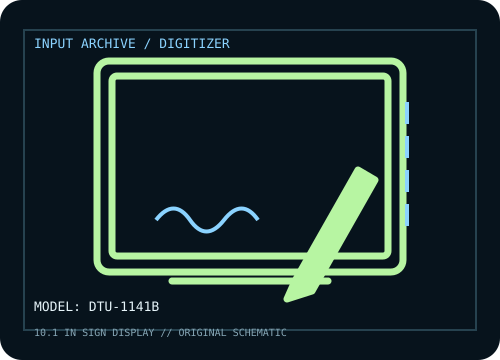

[ PEN TABLETS AND DIGITIZERS // IDENTIFIED COMPONENT ]
Wacom DTU-1141B
10.1-inch business signature pen display with an integrated color LCD and pressure-sensitive pen.

MODEL IDENTIFICATION: Manufacturer model / identifier: DTU-1141B. Confirm the unit label, bundle contents, regional suffix, and revision against its product documentation before compatibility or repair work.
Model specifications
| Catalog subcategory | Pen tablets and digitizers |
|---|---|
| Exact model / SKU | DTU-1141B |
| Active area | 223.2 × 125.6 mm (8.8 × 4.9 in) active area. |
| Pressure and pen technology | 1,024 pressure levels; cordless, battery-free Wacom EMR pen. |
| Resolution / report rate | Integrated LCD: 1,920 × 1,080 pixels. No pen-digitizer lpi or report-rate figure is claimed here. |
| Interface | USB 2.0 for host/data and display connection; host signature workflow requires compatible Wacom sign software or an application using its SDK. |
| Driver, OS and compatibility | Wacom lists Windows and macOS support through its enterprise sign software/driver resources; application, SDK, and OS version compatibility must be checked for the intended signing workflow. |
| Power | USB bus-powered; no separate display power supply is normally required. |
| Calibration and service notes | Use the Wacom sign-pro calibration facility to align pen input to the LCD; verify the application’s signature capture area after host display scaling changes. |
Preservation and service notes
USB bus-powered; no separate display power supply is normally required. Use the Wacom sign-pro calibration facility to align pen input to the LCD; verify the application’s signature capture area after host display scaling changes.
Record the as-found model label, accessories, host OS, driver/firmware version, calibration state, and test method. Published capability does not guarantee compatibility with a particular application or individual used unit.
Manufacturer sources
- DTU-1141B data sheet — WacomManufacturer model-specific data sheet for display, active area, interface, and pen specifications.
- Drivers & software — WacomManufacturer driver and support selector; signature application compatibility is host-workflow dependent.
Manufacturer product and support pages can change. Save the applicable manual/driver release notes and verify the exact model and revision at setup.